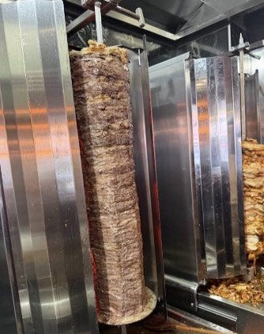
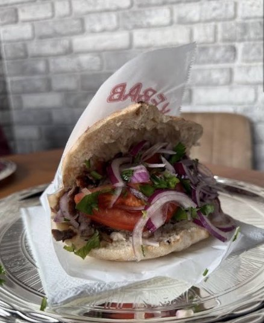
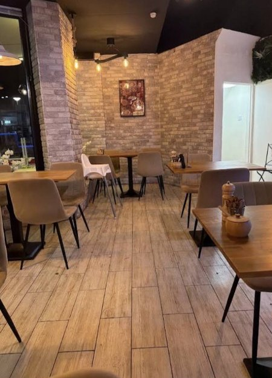
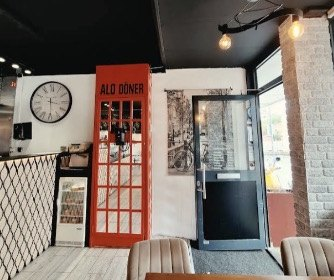

4,9 ★gemiddeld op Google
457Google-reviews
Eigen chefdöner elke dag vers
Di–zo13:00 tot 22:00


ONS VERHAAL
Ustam betekent ‘mijn meester’
- Elke dag vers geselecteerd vlees
- Eigen kruiden van de chef
- Traditioneel bereid, zonder toevoegingen
- Vlees of kip, bij elk gerecht
KOM BINNEN
Rustig zitten en uitgebreid eten
Warm hout, bakstenen muren en tijd voor je bord. Volgens Google blijven gasten hier gemiddeld één tot vier uur. Met thee na, natuurlijk.


WAT GASTEN ZEGGEN
4,9 sterren uit 457 reviews
VRAGEN
Goed om te weten
Honger gekregen?
Dinsdag tot en met zondag vanaf 13:00 uur. Tot zo!